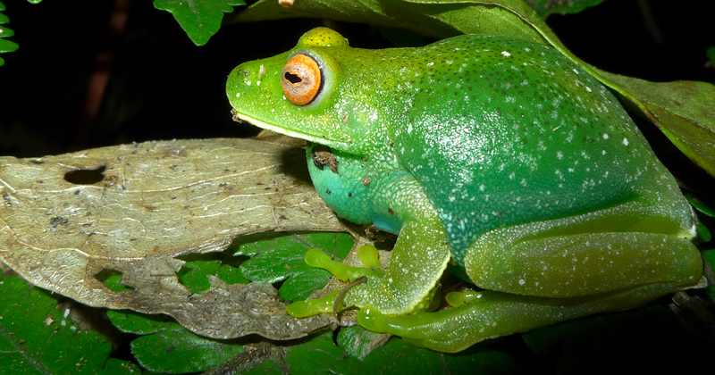
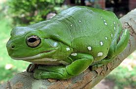
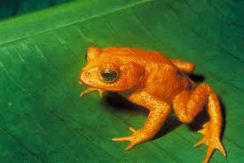

Sapo-Verde 🐸
O sapo-verde é uma das espécies mais icônicas da SapoLândia! Com sua pele brilhante e olhos expressivos, ele é o rei dos pântanos e lagos. Eles adoram se esconder entre folhas e são excelentes nadadores.
Sapo-Arborícola 🌳
Estes pequeninos vivem nas árvores e têm dedos especiais que os ajudam a escalar. Suas cores vibrantes variam do verde-limão ao azul-turquesa. Eles são os acrobatas da floresta!
RAFA 🎸
RAFA BOOOOOOOOY LE FRANCOUUUUIIISSSSS
Sapo-Dourado ✨
Raro e brilhante, o sapo-dourado é uma joia da natureza. Eles são considerados símbolos de sorte em muitas culturas e se camuflam perfeitamente entre folhas secas e raízes.